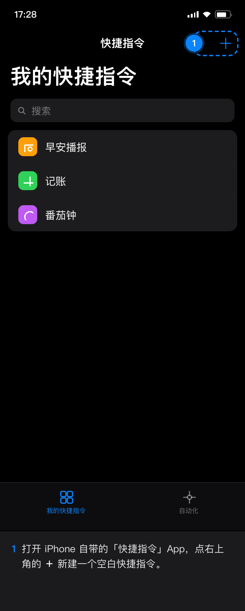
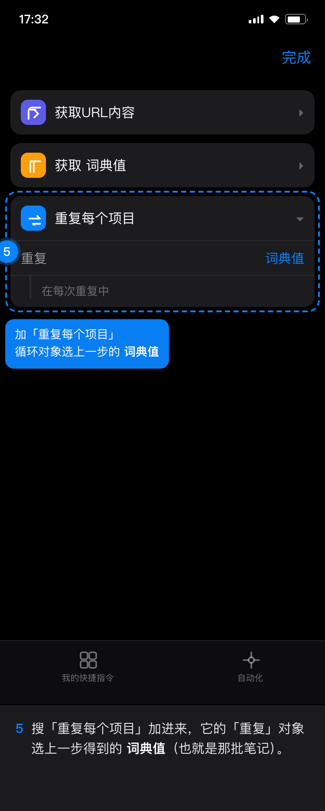
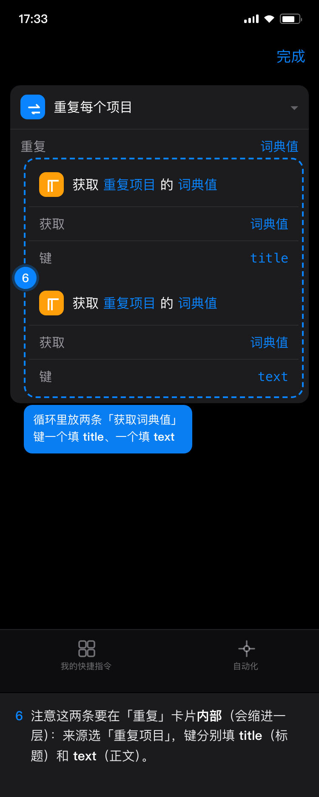
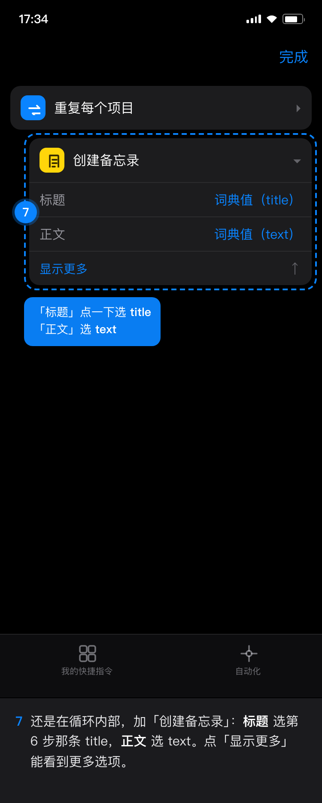
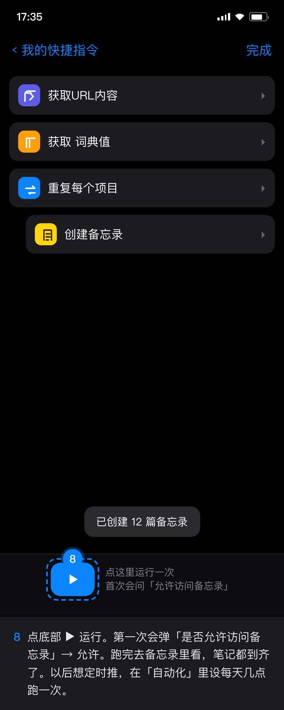

开始前先在电脑上准备好链接：
- 打开笔记 → 左下角齿轮 →「同步到苹果备忘录」
- 点「生成取数链接」→「复制链接」
- 把这串链接发到手机（微信/备忘录都可以），待会儿粘贴





为什么这么绕
苹果备忘录不像日历那样支持「订阅地址自动同步」，也没有开放的写入接口，第三方网页只能把内容交给你手机上的快捷指令，由它来创建备忘录。所以这一步是一次性的设置，设好以后每次点一下运行即可。
两个要知道的点：每次运行都会新建一篇（不会覆盖旧的那篇）；链接本身就是钥匙，不要发给别人。
查看完整长图（一张看完）